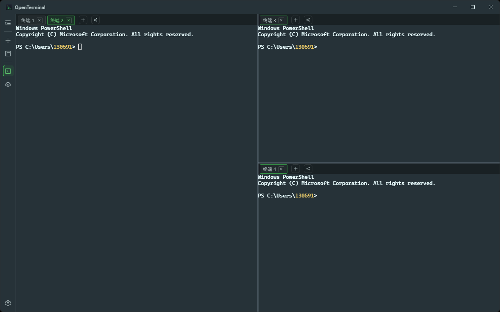
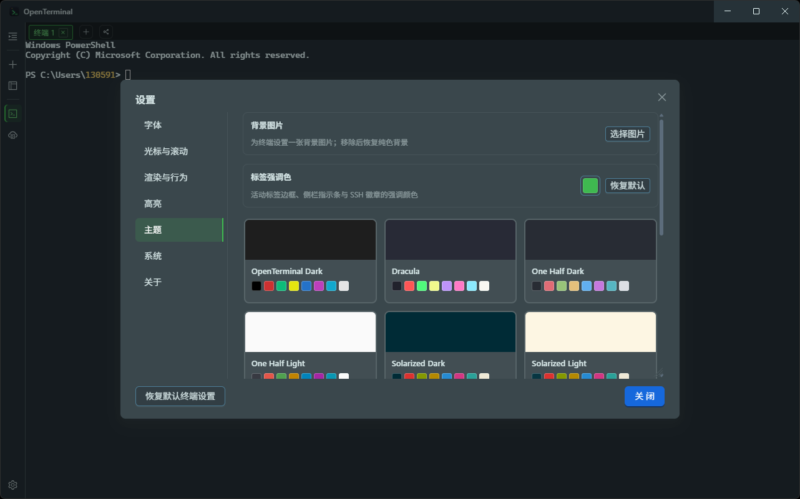

1.0.15 2026-09-20
- 新增自定义终端背景图片与图片不透明度设置
- 主题编辑器重名提醒与颜色值校验
- 设置导航选中项文字对比度修复
开源桌面终端 · MIT 协议
OpenTerminal 面向开发和运维场景：WebGL 加速的终端渲染、可分屏的 SSH 会话、 内置 SFTP 文件管理与广播输入。安装即用，支持自动更新。
当前版本 v1.0.15 · 提供 exe 与 msi 安装包。

按使用场景划分的三组功能，全部能力见仓库 README。

从 GitHub Releases 下载；全部历史版本在同一页面。
| 安装包 | 适用场景 | 大小 | 链接 |
|---|---|---|---|
| OpenTerminal-1.0.15-setup.exe | 常规安装，支持应用内自动更新（推荐） | 122 MB | 下载 |
| OpenTerminal-1.0.15-setup.msi | 企业批量部署（MSI 无自动更新，需手动升级） | 135 MB | 下载 |
| 历史版本 | 全部发布记录与更新说明 | - | releases 列表 |
应用内检查更新优先访问 git.codingplan.site 更新通道，失败时回退 GitHub Releases。 更新包经 SHA-512 校验后安装。更新说明文字从发布通道的 release-notes.md 读取，与每次发布同步更新。
完整日志见仓库 CHANGELOG.md。